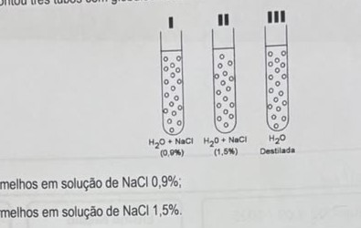
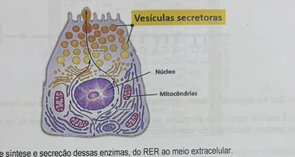
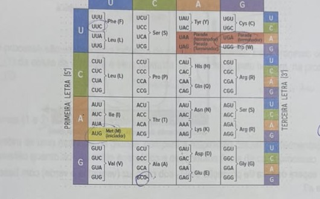
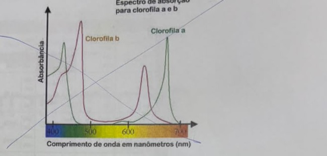
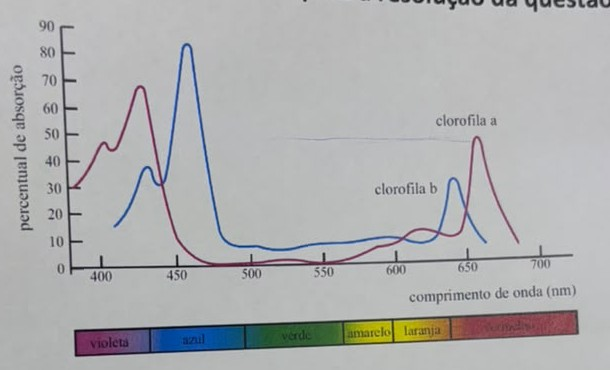
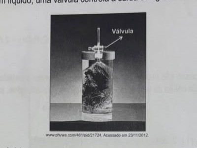
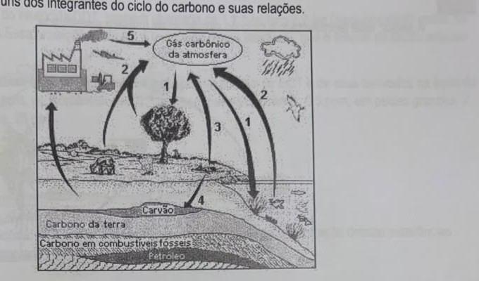
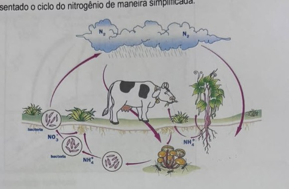

Professora: Kamila · AC1 · Simulado Vital
Um estudante montou três tubos com glóbulos vermelhos:

T1) glóbulos vermelhos em solução de NaCl 0,9%;
T2) glóbulos vermelhos em solução de NaCl 1,5%.
T3) glóbulos vermelhos em água destilada.
Para análise, considere que a concentração de soluto do sangue seja de 0,9%.
a) Explique o que acontece com o volume celular em cada tubo.
b) Diferencie difusão simples e difusão facilitada no contexto da membrana plasmática.
a) O sangue tem 0,9% de soluto, então esse é o valor de referência (isotônico).
b) Na difusão simples, a substância atravessa a bicamada lipídica diretamente, sem precisar de proteína — funciona bem para moléculas pequenas e/ou apolares (ex: O₂, CO₂). Na difusão facilitada, a substância precisa de uma proteína de membrana (canal ou carregadora) pra atravessar, porque é grande, polar ou carregada (ex: glicose, íons). As duas são passivas (a favor do gradiente de concentração, sem gasto de ATP) — a diferença é só a necessidade da proteína.
As células acinares do pâncreas são responsáveis por sintetizar, armazenar e secretar as enzimas digestivas (como amilases, lipases e proteases) que atuam na digestão de carboidratos, gorduras e proteínas no intestino delgado. Essas enzimas são liberadas na forma inativa e ativadas no duodeno, protegendo o próprio pâncreas da autodigestão.

Descreva o fluxo de síntese e secreção dessas enzimas, do RER ao meio extracelular.
A sequência correta é: RER → Complexo golgiense → vesícula secretora → exocitose.
1) O RER (retículo endoplasmático rugoso) sintetiza a proteína (a enzima digestiva) nos
ribossomos aderidos à sua membrana.
2) A proteína é transportada até o Complexo de Golgi, onde é processada/modificada e empacotada
em vesículas.
3) As vesículas secretoras se desprendem do Golgi e migram até a membrana plasmática.
4) As vesículas se fundem com a membrana plasmática e liberam as enzimas no meio extracelular —
esse processo de liberação é a exocitose (não confundir com endocitose, que é o
processo inverso, de entrada de material na célula).
O esquema abaixo representa um filamento de DNA e, a partir dele, ocorre a síntese do RNA mensageiro.
Esquema: pareamento de bases (C–G, T–A, C–G, A–U) e fita de DNA: TAC GGA CTA GCT TAG
a) Qual é a sequência de bases nitrogenadas do RNAm formado a partir de sua transcrição?
b) É possível, numa célula eucariótica, gerar duas proteínas diferentes a partir de um mesmo gene. Qual é o nome do processo responsável por esse fenômeno?
a) Pareando cada base do DNA molde com sua complementar de RNA (A↔U, T↔A,
C↔G, G↔C), a fita TAC GGA CTA GCT TAG transcreve para o RNAm:
AUG CCU GAU CGA AUC.
b) O processo é o splicing alternativo (processamento alternativo do RNA). Depois da transcrição, o RNA "bruto" (pré-mRNA) contém éxons e íntrons; no splicing, os íntrons são removidos e os éxons podem ser combinados de formas diferentes, gerando RNAs mensageiros — e portanto proteínas — diferentes a partir do mesmo gene. (Mutação genética não serve como resposta aqui: mutação altera a sequência do DNA em si, não explica a produção normal de proteínas diferentes a partir do mesmo gene original.)
Considere o RNAm: 5'–AUG UUC GCG UGA–3'.

a) Escreva a sequência de aminoácidos prevista (use abreviações de 3 letras) para a proteína sintetizada.
b) Explique o fato do código genético ser universal e degenerado, indicando um exemplo de mutação silenciosa nesse RNAm.
a) Lendo os códons na tabela: AUG = Met (M, início) · UUC = Phe (F) · GCG = Ala (A) · UGA = parada (não traduzido). Sequência de aminoácidos: Met-Phe-Ala.
b) Universal porque praticamente todos os seres vivos usam o mesmo "dicionário" códon→aminoácido (reflexo de uma origem evolutiva comum). Degenerado (redundante) porque existem 64 códons possíveis para só 20 aminoácidos, então a maioria dos aminoácidos é codificada por mais de um códon — essa redundância aparece principalmente na terceira base do códon (posição "wobble").
Exemplo de mutação silenciosa nesse RNAm: trocar a terceira base de UUC (Phe) por outra que ainda codifique Phe — por exemplo, UUC → UUU também é Phe, então a proteína final não muda. (Repare que trocar a primeira base de um códon quase sempre muda o aminoácido — não é isso que caracteriza uma mutação silenciosa.)
Cloroplastos de uma planta foram iluminados com luz vermelha e depois com luz verde de maneira isolada, medindo-se a liberação de O₂.

a) O que se espera da taxa de produção de O₂ sob cada luz (vermelha e verde) com base na absorção de energia pela clorofila a?
b) De maneira simplificada, afirma-se que "a fotossíntese produz glicose para a planta e libera oxigênio". No processo fotossintético, a sequência de eventos é a mesma que aparece nessa frase, ou seja, primeiro a glicose é produzida e, em seguida, o gás oxigênio é liberado? Justifique a sua resposta evidenciando as fases da fotossíntese em que esses eventos acontecem.
Gráfico de apoio (considerar só para a questão 5):

a) Pelos gráficos, a clorofila a absorve fortemente luz vermelha (~660-680nm) e azul, mas absorve muito pouco luz verde (~500-600nm, o "vale" do gráfico — por isso as folhas parecem verdes: essa luz é refletida, não absorvida). Então: sob luz vermelha, espera-se alta produção de O₂ (boa absorção de energia); sob luz verde, espera-se produção de O₂ muito baixa (pouca energia é absorvida pela clorofila a).
b) Não, a ordem da frase simplificada não é a ordem real dos eventos. Na fase clara (fotoquímica), que ocorre primeiro, nos tilacoides, a água é quebrada (fotólise da água) — e é nesse momento que o O₂ é liberado, junto com a produção de ATP e NADPH. Só depois, na fase escura (Ciclo de Calvin, no estroma), o ATP e o NADPH produzidos são usados para fixar CO₂ e formar glicose. Ou seja, o oxigênio é liberado antes da glicose ser produzida, na ordem inversa à da frase do enunciado.
A levedura Saccharomyces cerevisiae pode obter energia na ausência de oxigênio, de acordo com a equação
C₆H₁₂O₆ → 2 CO₂ + 2 C₂H₅OH + 2 ATP
Produtos desse processo são utilizados na indústria de alimentos e bebidas. Esse processo ocorre no(a) ___(1) da célula da levedura e seus produtos são utilizados, pelo homem, na produção de ___(2).
a) Como as lacunas (1 e 2) dessa frase podem ser preenchidas?
b) A partir da quebra de uma molécula de glicose, compare a respiração celular e a fermentação citada no enunciado da questão quanto ao seu saldo energético e os produtos finais de cada processo, com suas respectivas quantidades.
a) Lacuna 1: citoplasma (a fermentação ocorre no citosol, fora da mitocôndria — é por isso que não depende de oxigênio). Lacuna 2: bebidas alcoólicas e pão (o CO₂ liberado faz o pão crescer, e o etanol é usado em bebidas como cerveja e vinho). Cuidado: iogurte vem de fermentação láctica feita por bactérias, um processo diferente — não se encaixa nesse enunciado, que fala da fermentação alcoólica da levedura.
b) Respiração celular: saldo de aproximadamente 30 a 32 ATP por molécula de glicose, com produtos finais CO₂ e H₂O. Fermentação alcoólica (a da levedura): saldo de apenas 2 ATP por glicose, com produtos finais CO₂ e etanol (C₂H₅OH) — um saldo energético muito menor, porque a glicose não é totalmente quebrada como na respiração.
A figura abaixo mostra um equipamento que coleta gases produzidos por plantas aquáticas. Nele, são colocados ramos que ficam submersos em líquido; uma válvula controla a saída dos gases.

a) Que gás(gases) é(são) coletado(s) de um equipamento como esse, quando a planta é mantida sob mesma temperatura e sob intensidade luminosa
a1) inferior ao ponto de compensação fótico?
a2) superior ao ponto de compensação fótico?
b) Dois equipamentos, preparados com a mesma quantidade de planta e o mesmo volume de líquido, foram mantidos sob as mesmas condições de temperatura e de exposição à luz; apenas um fator diferiu entre as duas preparações. Após duas horas, verificou-se que a quantidade de gases coletada de um dos equipamentos foi 20% maior do que a do outro. Qual fator, que variou entre as preparações, pode explicar essa diferença na quantidade de gases coletada?
O "ponto de compensação fótico" é a intensidade de luz em que a taxa de fotossíntese se iguala à taxa de respiração (troca líquida de gases = zero).
a1) Abaixo do ponto de compensação: a respiração é maior que a fotossíntese,
então a planta consome mais O₂ do que produz — o gás coletado (em excesso) é o
CO₂.
a2) Acima do ponto de compensação: a fotossíntese é maior que a respiração, e
sobra O₂, que é o gás coletado.
b) Como tudo mais foi mantido igual (planta, volume de líquido, temperatura, luz), o fator que mais provavelmente variou é a quantidade de CO₂ dissolvido na água (por exemplo, adicionando bicarbonato de sódio numa das preparações) — mais CO₂ disponível aumenta a taxa fotossintética, já que o CO₂ costuma ser o fator limitante nesse tipo de experimento, resultando em mais O₂ coletado.
A figura abaixo mostra alguns dos integrantes do ciclo do carbono e suas relações.

a) Dê o(s) número(s) da(s) linha(s) e o(s) nome(s) do(s) processo(s) relacionado(s) a:
a1) fixação do carbono;
a2) devolutiva deste elemento à atmosfera.
b) Indique o(s) número(s) da(s) linha(s) cuja(s) seta(s) representa(m) a transferência de carbono na forma de molécula orgânica.
Os processos do ciclo do carbono nessa figura, de forma geral:
Sobre os números exatos de cada seta: eles dependem de qual seta está apontando pra onde na sua cópia impressa da figura, e isso não deu pra confirmar com 100% de certeza só pela foto — confira o sentido de cada seta numerada (1 a 5) contra essas três categorias acima antes de decorar um número específico.
A seguir, está representado o ciclo do nitrogênio de maneira simplificada:

Sobre este ciclo, responda:
a) Qual é o nome das bactérias capazes de realizarem a fixação do nitrogênio? Onde elas se encontram?
b) A rotação de culturas é uma prática agrícola que consiste em alternar diferentes espécies vegetais em uma mesma área ao longo do tempo. Os principais objetivos dessa técnica incluem: conservação do solo, aumento de produtividade e controle de pragas e doenças. Explique o motivo dessa técnica poder substituir o uso de fertilizantes nitrogenados.
a) São as bactérias fixadoras de nitrogênio (gênero Rhizobium, entre outras). Elas vivem em simbiose nos nódulos das raízes de plantas leguminosas (feijão, soja, ervilha etc.) — algumas espécies também vivem livres no solo.
b) A rotação de culturas costuma incluir o plantio de leguminosas entre os ciclos de outras culturas. Como as leguminosas hospedam bactérias fixadoras de nitrogênio nas raízes, elas enriquecem naturalmente o solo com nitrogênio "utilizável" (convertendo N₂ do ar em formas como NH₄⁺/NO₃⁻), reduzindo a necessidade de aplicar fertilizante nitrogenado sintético.
Nos anos de 1970, o uso do inseticida DDT, também chamado de 1,1,1-tricloro-2,2-bis (para-clorofenil) etano, foi proibido em vários países. Essa proibição se deveu à toxicidade desse inseticida, que é solúvel no tecido adiposo dos animais.
Um estudo realizado no litoral dos EUA mostrou que a concentração total de DDT e de seus derivados na água do mar era cerca de 5×10⁻⁵ ppm; no fitoplâncton, 4×10⁻² ppm; em peixes pequenos, 0,5 ppm; em peixes grandes, 2 ppm; e, em aves marinhas, 25 ppm.
(Havia um gráfico nessa questão, mas ele saiu ilegível na foto original — não foi possível recortar.)
Dê uma explicação, explicitando o conceito atrelado a ela, para o fato de a concentração dessas substâncias aumentar na ordem apresentada.
O conceito é a biomagnificação (bioacumulação). Como o DDT é lipossolúvel (se acumula no tecido adiposo) e não é facilmente eliminado pelo organismo, cada predador acumula o DDT de todas as presas que come ao longo da vida. Assim, a concentração vai aumentando a cada nível trófico: água → fitoplâncton → peixes pequenos → peixes grandes → aves marinhas — cada elo da cadeia "herda" e concentra ainda mais o DDT acumulado pelos elos anteriores, o que explica o salto de 5×10⁻⁵ ppm na água até 25 ppm nas aves.